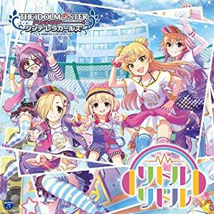

リトルリドル
Album
■「STARLIGHT MASTER」シリーズ第20弾

「THE IDOLM@STER CINDERELLA GIRLS STARLIGHT MASTER 20 リトルリドル」の発売が8月22日に決まりました！
こちらのCDには五十嵐響子のソロ2曲目となる「アツアツ♪マカロニグラタン」、 塩見周子のソロ2曲目となる「Private Sign」を収録致します！
本CDにも、「THE IDOLM@STER CINDERELLA GIRLS 6thLIVE」CD封入先行抽選予約申込が出来る シリアルナンバーを封入致します。
今週は表題曲「リトルリドル」の試聴を開始します！是非ご試聴ください！
収録曲
- リトルリドル（M@STER VERSION）
- アツアツ♪マカロニグラタン
- Private Sign